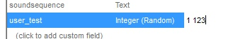

字节角（Byte Angle）
可以方便地设置字节角（byte angle）。
整数（随机）（Integer (random)）
在给定的最小值和最大值之间随机选取一个整数值。要使用它，请将 UDMF 字段类型改为“整数（随机）”，然后按 'min max' 的格式输入一个值。
技术说明：此字段类型被视为“虚拟”类型，因为它无法保存到地图中，所以在编辑窗口中单击“确定”后，它会被转换为“整数”类型。
示例：
此处，字段 'user_test' 将被添加到所有选中的地图元素中，并且在所有这些元素中，该字段都会有一个 1 到 123 之间的随机值：

小数（随机）（Decimal (random)）
与“整数（随机）”相同，但用于小数值。